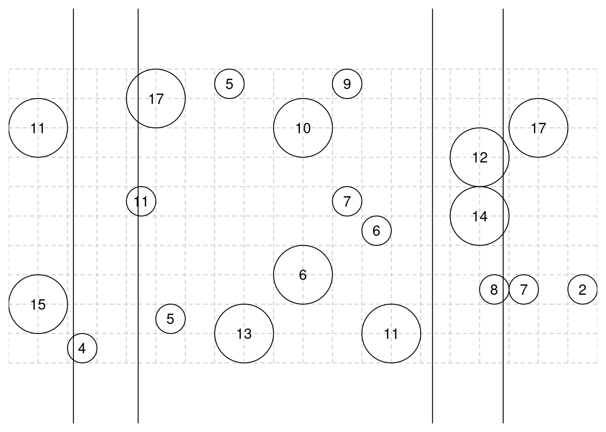
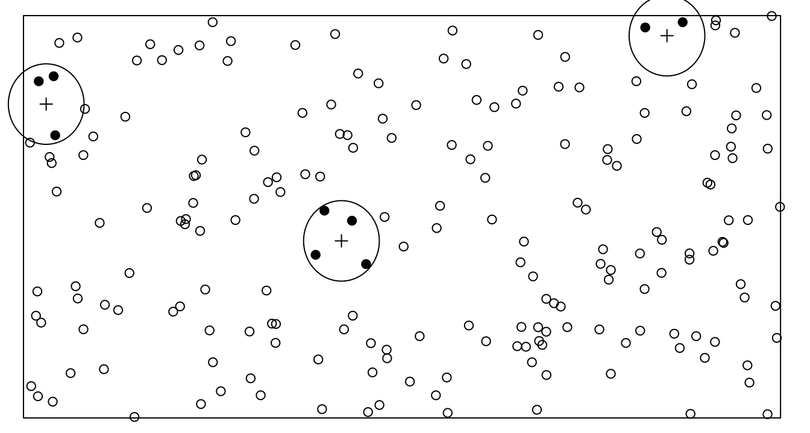
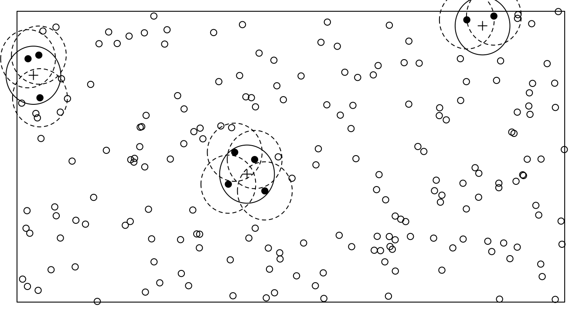
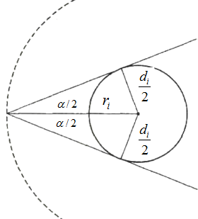

You can also download a PDF copy of this lecture.
A sample of elements in a region are selected according to the following procedure.
Select a random point within the region based on a uniform distribution. Extend a transect line from that point in a given direction such that it crosses the whole region.
Select all objects that are intercepted by the transect line.
This process can be repeated.
Example: Consider the line-intercept survey with four transect lines.

Consider the sample of objects intercept by one line. The inclusion probability of the \(i\)-th object is \(\pi_i = w_i/W\), where \(w_i\) is the horizontal width of the object and \(W\) is the total width of the region. An estimator of \(\tau\) based on a given line is the Horvitz-Thompson estimator \[ \hat\tau = \sum_{i \in \mathcal{S}} \frac{y_i}{\pi_i} = W\sum_{i \in \mathcal{S}} \frac{y_i}{w_i}. \] Example: Based on the example shown above, what are the estimates of \(\tau\) based on the three lines that intercept objects? The value of the target variable is shown within each object.Let \(\hat\tau_k\) be the estimate of \(\tau\) based on the \(k\)-th non-empty line. An estimate of \(\tau\) can be obtained by averaging \(K\) transect line estimates to get \[ \hat\tau = \frac{1}{K}\sum_{k=1}^K \hat\tau_k. \] The estimated variance of \(\hat\tau\) is then \[ \hat{V}(\hat\tau) = \frac{1}{K(K-1)}\sum_{k=1}^K(\hat\tau_k - \hat\tau)^2. \]
Example: What is the estimate of \(\tau\) based on the survey given earlier?
Another estimator is to use a Horvitz-Thompson estimator based on the sample of elements intersected by the \(n\) transect lines. Then the Horvitz-Thompson estimator is \[ \hat\tau = \sum_{i \in \mathcal{S}}\frac{y_i}{\pi_i}, \] where \(\pi_i = 1 - (1 - w_i/W)^t\), since we are sampling with replacement and \(w_i/W\) is the selection probability of the \(i\)-th element. Calculation of the estimated variance of this estimator requires the second-order (joint) inclusion probabilities, which can be computed as \[ \pi_{ij} = \pi_i + \pi_j - 1 + \left(1 - \frac{w_i + w_j - w_{ij}}{W}\right)^t, \] where \(w_{ij}/W\) is the probability that objects \(i\) and \(j\) would both be intersected by a line.
A sample of objects in a region are selected according to the following procedure.
Select a random point within the region based on a uniform distribution.
Select all objects that are within a plot of a given shape (e.g., circle, square, or rectangle) centered on that point.
This process can be repeated.
Example: Consider the following fixed area plot survey with three circular fixed area plots.

The probability that an object will be included within a plot equals the area of the plot that is also within the region when the center of the plot is centered on the object.

For a given plot the Horvitz-Thompson estimator of \(\tau\) is \[ \sum_{i \in \mathcal{S}}\frac{y_{i}}{\pi_{i}} = A\sum_{i \in \mathcal{S}}\frac{y_{i}}{a_{i}}, \] because \(\pi_i = a_i/A\) where \(A\) is the total area of the region and \(a_i\) is the area of the plot that is also withiin the region when the plot is centered on the \(i\)-th object.
An estimator of \(\tau\) can be obtained by averaging these estimates. Let \(\hat\tau_k\) be the estimate from the \(k\)-th non-empty plot. If there are \(K\) non-empty plots then the estimator of \(\tau\) is \[ \hat\tau = \frac{1}{K}\sum_{k=1}^K \hat\tau_k. \] The estimated variance of \(\hat\tau\) is \[ \hat{V}(\hat\tau) = \frac{1}{K(K-1)}\sum_{k=1}^K (\hat\tau_k - \hat\tau)^2. \]
Example: Assume a region with a total area of 5000 meters and \(K\) = 3 non-empty circular plots.| \(k\) | \(y_i\) | \(a_i\) |
|---|---|---|
| 1 | 63.9 | 59.5 |
| 1 | 50.4 | 74.3 |
| 1 | 61.8 | 75.7 |
| 2 | 27.1 | 78.5 |
| 2 | 42.0 | 78.5 |
| 2 | 52.5 | 78.5 |
| 2 | 33.4 | 78.5 |
| 3 | 27.8 | 53.2 |
| 3 | 57.8 | 47.7 |
A sample of trees is selected according to the following procedure.
Select a random point within a region based on a uniform distribution.
Select all trees with trunk diameters that exceed a critical angle (\(\alpha\)) when viewed from that point.

Also see Figure 2 in this paper.
Let \(\alpha\) be the critical angle and \(d_i\) by the diameter of the \(i\)-th tree. Then the radius (\(r_i\)) of a circle that encloses all points that would result in the selection of the \(i\)-th tree is \[ r_i = \frac{d_i}{2\sin(\alpha/2)}. \] Thus the \(i\)-th tree is selected if and only if \[ \text{distance to center of the $i$-th tree} \le \frac{d_i}{2\sin(\alpha/2)}, \] assuming that this circle does not extend outside the region. The inclusion probability of the \(i\)-th tree is the probability of this happening. The area of this circle is \(a_i = \pi r_i^2\) which can be computed as \[ a_i = \frac{\pi d_i^2}{4\sin^2(\alpha/2)}. \] Note that \(\pi\) here is the mathematical constant \(\pi\) \(\approx\) 3.14, not the inclusion probability of the tree. The inclusion probability of the \(i\)-th tree is \[ \pi_i = a_i/A, \] where \(A\) is the total area of the region in which the point was sampled. If there are \(n\) selected trees, then the estimate of \(\tau\) for some target variable \(y_i\) is \[ \hat\tau = \sum_{i \in \mathcal{S}}\frac{y_i}{\pi_i}. \]
If \(y_i\) is the basal area of the \(i\)-th tree so that \(y_i = \pi d_i^2/4\), then \[ \hat\tau = \sum_{i \in \mathcal{S}} \frac{y_i}{\pi_i} = nA \sin^2(\alpha/2), \] where \(n\) is the number of selected trees, so that the estimated total basal area is proportional to the number of selected trees.
As in the previous examples if we have \(K\) estimates of \(\tau\) (based on as many points) then these can be averaged to come up with one estimate. In the case of estimating total basal area, this estimator becomes \[ \hat\tau = \frac{A\sin^2(\alpha/2)}{K}\sum_{k=1}^K n_k, \] so that \(\hat\tau\) is proportional to the average number of trees selected.